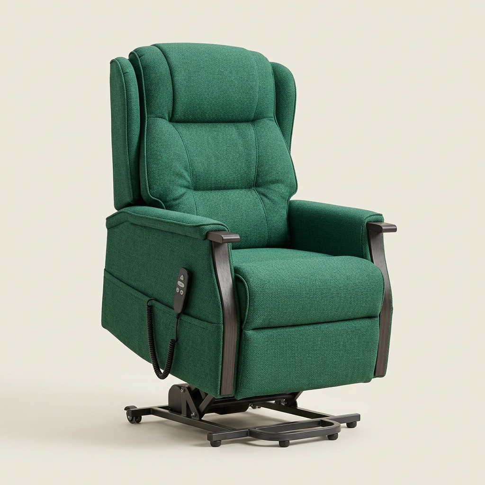
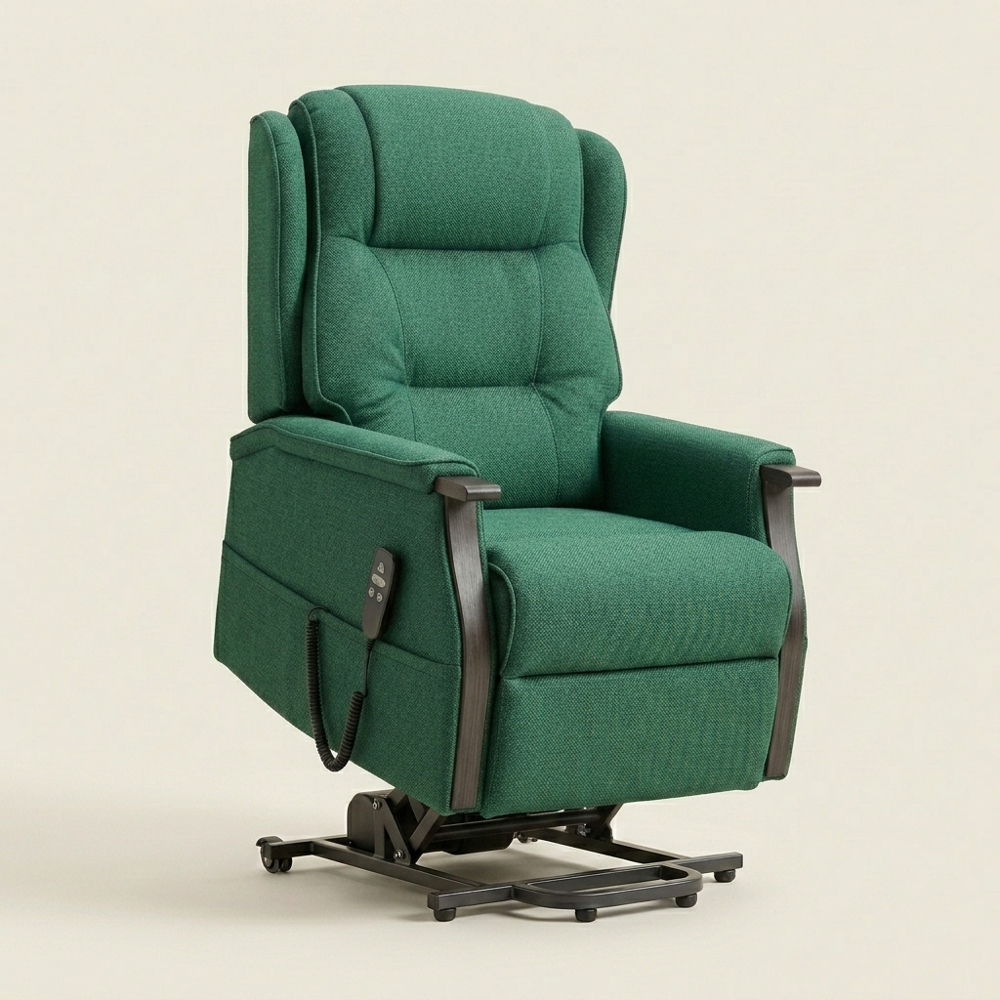
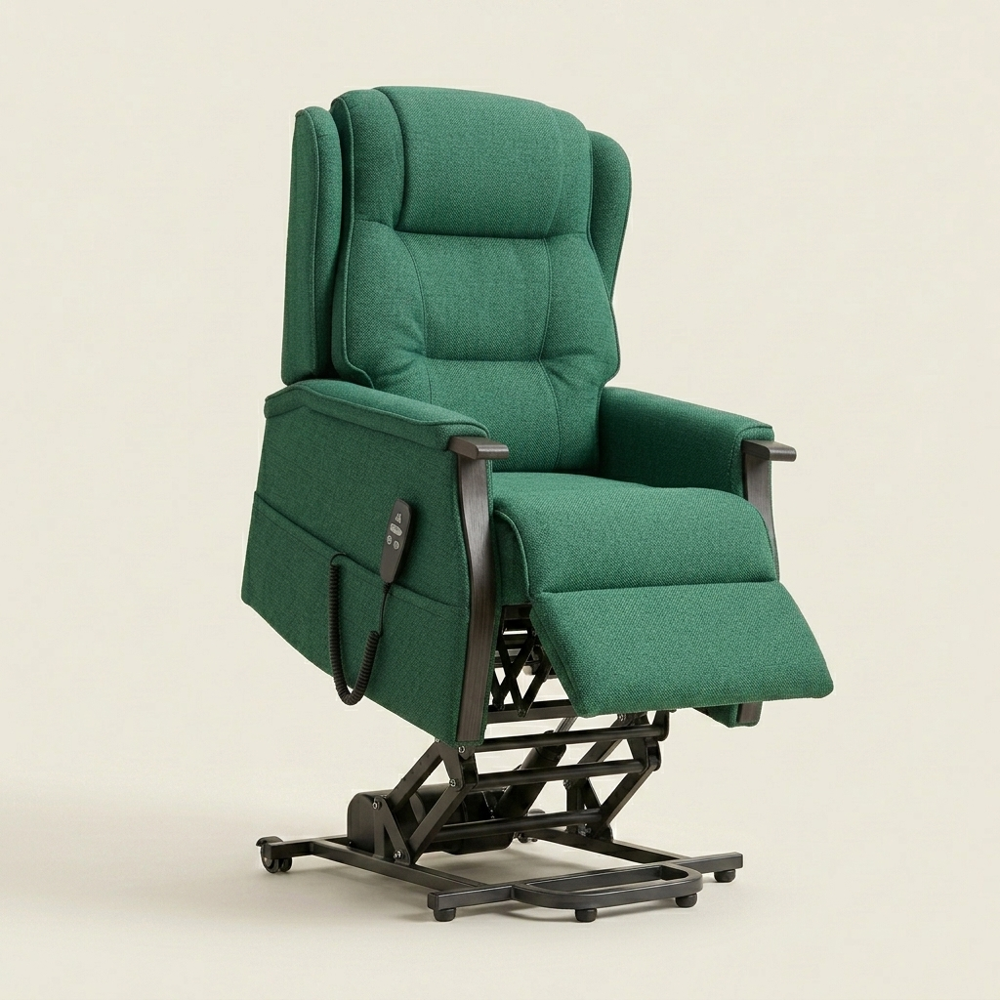

Als gediplomeerd BewegingsTechnoloog droomt Geert al jaren van de perfecte sta-opstoel: een model dat niet alleen ergonomisch perfect aansluit op uw lichaam, maar ook met een vloeiende, stabiele beweging opstaat. Hieronder kunt u deze upstand-beweging zelf ervaren door simpelweg uw cursor op de stoel te plaatsen.


